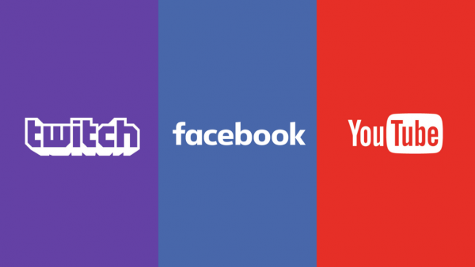

Conclusion
What We Have Concluded
We have concluded that streaming is important to content creators to make a living out of it and to create content that entertains the viewers or the audience they have made. Viewers watch live streams to entertain themselves throughout the various contents that are available to them. Various streaming platforms can be used but the 3 most prominent ones are Youtube, Facebook, and Twitch. There are also types of people who watch certain content on streaming platforms but the common thing that can be seen in all of them is that they watch it to either be part of a bigger community, entertain, or improve themselves.
